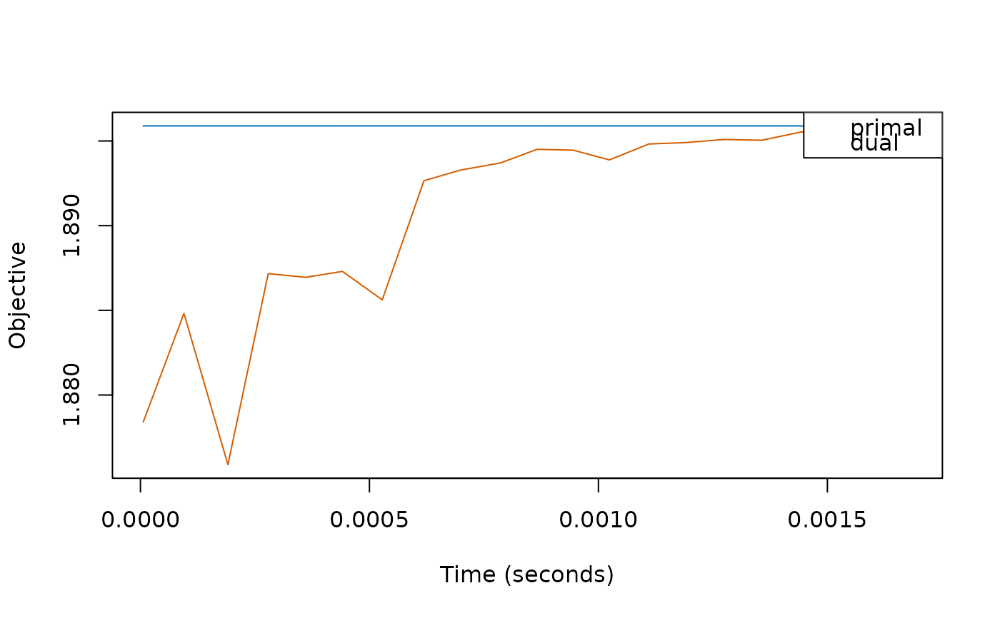

R/plotDiagnostics.R
plotDiagnostics.RdThis function plots various diagnostics collected during
the model fitting resulting from a call to SLOPE() provided that
diagnostics = TRUE.
plotDiagnostics( object, ind = max(object$diagnostics$penalty), xvar = c("time", "iteration"), yvar, ... )
| object | an object of class |
|---|---|
| ind | either "last" |
| xvar | what to place on the x axis. |
| yvar | deprecated (and ignored) |
| ... | other arguments that will be used to modify the call to
|
An object of class "trellis", which, unless stored in a variable,
will be plotted when its default print() method is called.
